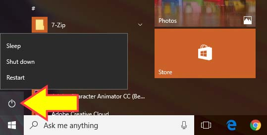

วิธี
ปิดคอม
แบบง่ายๆ
ปิดเครื่อง
1. ขยับลูกศรบนหน้าจอไปที่ปุ่มมุมขวาล่าง แล้วคลิกหนึ่งที
2. ขยับลูกศรมาคลิกที่สัญลักษณ์เปิด-ปิด ตามภาพ

3. คลิกที่คำว่า
Shut down
(อันกลาง)
รอให้หน้าจอดับเป็นอันเสร็จสิ้น
กลับหน้าแรก